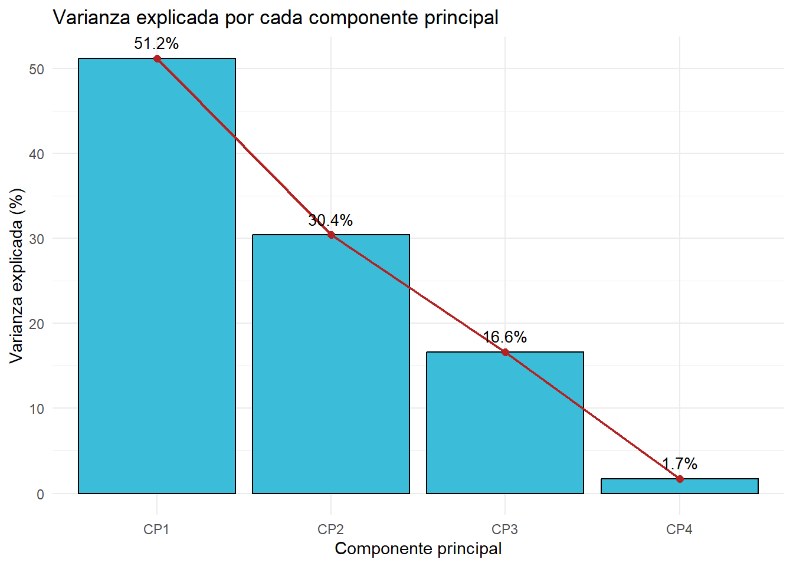
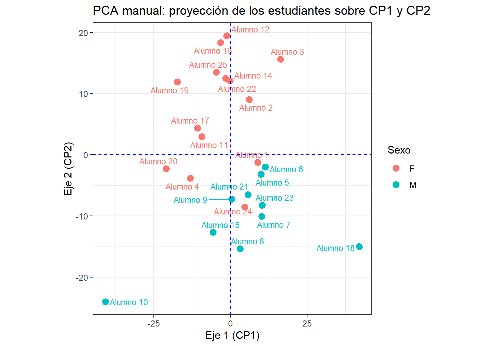
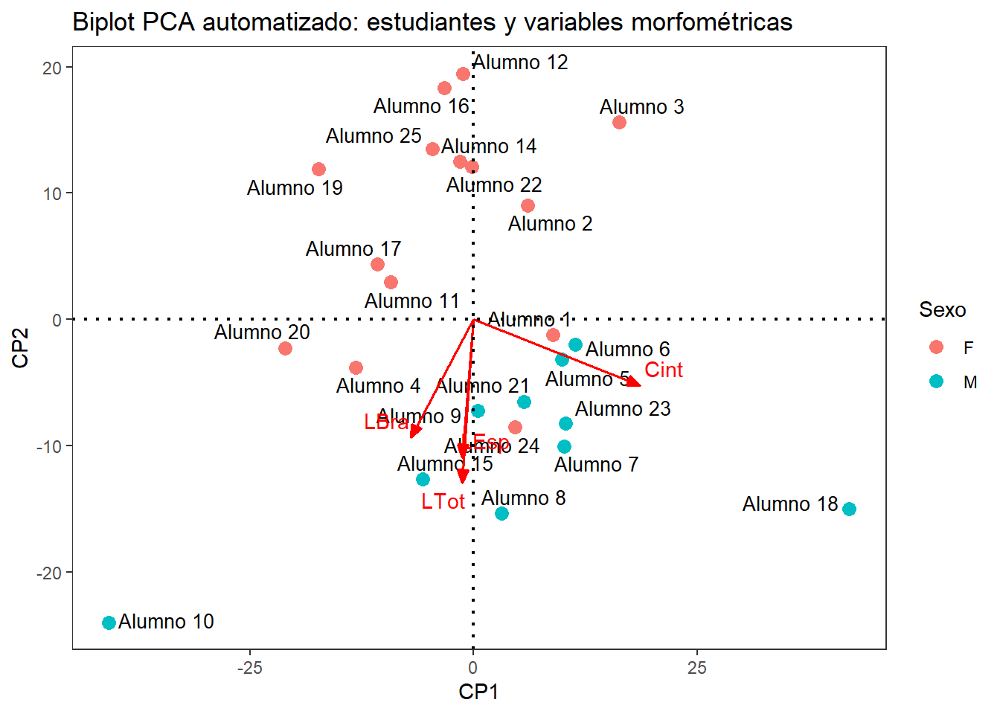

# install.packages(c("kableExtra","ggplot2","ggrepel","GGally"))
# Librerías o paquetes requeridos
library(tidyverse)
library(ggplot2) # Componente gráfico
library(ggrepel) # Etiquetas de texto que no se superponen
library(GGally) # Matriz de dispersión (ggpairs) - versión ggplot2 de plot(matriz)
library(vegan) # Para el pca de forma automatizada
library(kableExtra) # Para la edición de las tablas
library(readxl)
library(writexl)2. Aplicaciones de matrices (Análisis de Componentes Principales - PCA)
2.1 Librerías requeridas
Directorio para guardar tablas y figuras
dir.create("outputs/figuras",
recursive = TRUE,
showWarnings = FALSE)
dir.create("outputs/tablas",
recursive = TRUE,
showWarnings = FALSE)2.2 Cargar base de datos (datos1.csv)
# 1) Cargar la base de datos de Excel *.xlsx y dejarla lista en un solo bloque tidyverse
datos <- read_xlsx("datos1.xlsx", sheet = "datos1 - copia") %>%
drop_na() %>% # Elimina al estudiante 13 (dato faltante)
rename(Nombre = 1, Sexo = 2, LTot = 3, Cint = 4, LEsp = 5, LBra = 6)
glimpse(datos) # Estructura de la base de datos (equivalente tidyverse de str())Rows: 24
Columns: 6
$ Nombre <chr> "Alumno 1", "Alumno 2", "Alumno 3", "Alumno 4", "Alumno 5", "Al…
$ Sexo <chr> "F", "F", "F", "F", "M", "M", "M", "M", "M", "M", "F", "F", "F"…
$ LTot <dbl> 170, 160, 156, 173, 170, 165, 170, 181, 175, 186, 168, 155, 158…
$ Cint <dbl> 85, 80, 88, 63, 86, 89, 88, 80, 76, 45, 65, 70, 72, 79, 68, 68,…
$ LEsp <dbl> 43, 41, 35, 53, 47, 45, 56, 60, 55, 60, 49, 36, 40, 43, 39, 38,…
$ LBra <dbl> 57, 54, 48, 59, 56, 61, 59, 55, 54, 86, 55, 50, 55, 82, 50, 70,…# CTRL + SHIFT + M (%>%)
datos %>%
slice_head(n = 6) %>%
kbl(booktabs = FALSE) %>%
kable_classic(full_width = FALSE, html_font = "Cambria")| Nombre | Sexo | LTot | Cint | LEsp | LBra |
|---|---|---|---|---|---|
| Alumno 1 | F | 170 | 85 | 43 | 57 |
| Alumno 2 | F | 160 | 80 | 41 | 54 |
| Alumno 3 | F | 156 | 88 | 35 | 48 |
| Alumno 4 | F | 173 | 63 | 53 | 59 |
| Alumno 5 | M | 170 | 86 | 47 | 56 |
| Alumno 6 | M | 165 | 89 | 45 | 61 |
# Guardar tabla directorio principal
write_xlsx(datos, path = "datos_grales.xlsx")# 5. Exportar a Excel para el anexo
write_xlsx(datos, "outputs/tablas/datos_grales.xlsx")2.3 Cálculo de la matriz centrada
# Selección de las variables morfométricas con dplyr
variables <- datos %>%
select(LTot:LBra)
# glimpse(variables)
promedio <- colMeans(variables)
round(promedio, 2) LTot Cint LEsp LBra
166.67 76.83 45.38 60.79 # El centrado es una operación matricial (no una operación "tidy"),
# por eso se deja explícita con álgebra de matrices
m.centrada <- t(t(variables) - promedio)
# Encabezado de la matriz centrada con las seis primeras filas
head(round(m.centrada, 2)) %>%
kbl(booktabs = FALSE) %>%
kable_classic(full_width = FALSE, html_font = "Cambria")| LTot | Cint | LEsp | LBra |
|---|---|---|---|
| 3.33 | 8.17 | -2.38 | -3.79 |
| -6.67 | 3.17 | -4.38 | -6.79 |
| -10.67 | 11.17 | -10.38 | -12.79 |
| 6.33 | -13.83 | 7.62 | -1.79 |
| 3.33 | 9.17 | 1.62 | -4.79 |
| -1.67 | 12.17 | -0.38 | 0.21 |
2.4 Valores y vectores propios
# Matriz centrada de covarianzas (S.centrada)
S.centrada <- var(m.centrada)
round(S.centrada, 2) LTot Cint LEsp LBra
LTot 68.41 4.38 56.35 32.75
Cint 4.38 221.19 -3.67 -45.99
LEsp 56.35 -3.67 67.20 11.26
LBra 32.75 -45.99 11.26 108.95# Valores y vectores propios de la S.centrada (vv.propios)
vv.propios <- eigen(S.centrada)
vv.propioseigen() decomposition
$values
[1] 238.551229 141.646198 77.460019 8.092554
$vectors
[,1] [,2] [,3] [,4]
[1,] -0.06532082 -0.6446607 0.2348736 0.72455510
[2,] 0.93124818 -0.2601970 -0.2459119 -0.06783569
[3,] -0.06460934 -0.5458245 0.5144348 -0.65822342
[4,] -0.35261262 -0.4677453 -0.7872220 -0.19276967# Vectores propios (vec.propios)
vec.propios <- vv.propios$vectors
vec.propios [,1] [,2] [,3] [,4]
[1,] -0.06532082 -0.6446607 0.2348736 0.72455510
[2,] 0.93124818 -0.2601970 -0.2459119 -0.06783569
[3,] -0.06460934 -0.5458245 0.5144348 -0.65822342
[4,] -0.35261262 -0.4677453 -0.7872220 -0.192769672.5 Matriz rotada y pca
# Matriz centrada en formato matricial
m.centrada <- as.matrix(m.centrada)
# pca = matriz rotada (m.rotada)
m.rotada <- m.centrada %*% vec.propios
colnames(m.rotada) <- c("CP1", "CP2", "CP3", "CP4")
# Encabezado de la matriz rotada con las seis primeras filas
head(round(m.rotada, 2)) %>%
kbl(booktabs = FALSE) %>%
kable_classic(full_width = FALSE, html_font = "Cambria")| CP1 | CP2 | CP3 | CP4 |
|---|---|---|---|
| 8.88 | -1.20 | 0.54 | 4.16 |
| 6.06 | 9.04 | 0.75 | -0.86 |
| 16.28 | 15.62 | -0.52 | 0.81 |
| -13.16 | -3.81 | 10.22 | 0.85 |
| 9.90 | -3.18 | 3.14 | 1.65 |
| 11.39 | -1.98 | -3.74 | -1.83 |
# Se convierte la matriz a tibble y se une con Nombre y Sexo
# para poder graficarla con ggplot2 en las siguientes secciones
pca_manual <- m.rotada %>%
as_tibble() %>%
bind_cols(datos %>% select(Nombre, Sexo))2.6 Varianza explicada por cada componente
varianza <- tibble(
Componente = factor(paste0("CP", seq_along(vv.propios$values)),
levels = paste0("CP", seq_along(vv.propios$values))),
Valor_propio = vv.propios$values,
Porc_varianza = 100 * vv.propios$values / sum(vv.propios$values)
)
varianza# A tibble: 4 × 3
Componente Valor_propio Porc_varianza
<fct> <dbl> <dbl>
1 CP1 239. 51.2
2 CP2 142. 30.4
3 CP3 77.5 16.6
4 CP4 8.09 1.74ggplot(varianza, aes(x = Componente, y = Porc_varianza)) +
geom_col(fill = "#3BBDD9", color = "black") +
geom_line(aes(group = 1), color = "firebrick", linewidth = 0.8) +
geom_point(color = "firebrick", size = 2) +
geom_text(aes(label = paste0(round(Porc_varianza, 1), "%")),
vjust = -0.8, size = 3.5) +
labs(x = "Componente principal", y = "Varianza explicada (%)",
title = "Varianza explicada por cada componente principal") +
theme_minimal()
# Figura CP1 vs CP2 (versión ggplot2 del plot() + text() + abline() + grid())
ggplot(pca_manual, aes(x = CP1, y = CP2, color = Sexo)) +
geom_point(size = 3) +
geom_text_repel(aes(label = Nombre), size = 3, show.legend = FALSE) +
geom_hline(yintercept = 0, linetype = "dashed", color = "blue") +
geom_vline(xintercept = 0, linetype = "dashed", color = "blue") +
coord_fixed(ratio = 2) +
labs(x = "Eje 1 (CP1)", y = "Eje 2 (CP2)",
title = "PCA manual: proyección de los estudiantes sobre CP1 y CP2") +
theme_bw()
2.8 pca de forma automatizada
# Nuevamente el pca, ahora con la función prcomp
pca <- prcomp(datos %>% select(LTot:LBra))
# summary(pca)
names(pca)[1] "sdev" "rotation" "center" "scale" "x" 2.9 Coordenadas de estudiantes y de las variables morfométricas
# Coordenadas de los estudiantes, con Nombre y Sexo reales (no el número de fila)
coord.estud <- as_tibble(pca$x[, 1:2]) %>%
mutate(estudiante = datos$Nombre,
sexo = datos$Sexo)
head(coord.estud)# A tibble: 6 × 4
PC1 PC2 estudiante sexo
<dbl> <dbl> <chr> <chr>
1 8.88 -1.20 Alumno 1 F
2 6.06 9.04 Alumno 2 F
3 16.3 15.6 Alumno 3 F
4 -13.2 -3.81 Alumno 4 F
5 9.90 -3.18 Alumno 5 M
6 11.4 -1.98 Alumno 6 M # Coordenadas de las variables morfométricas (dos primeros ejes)
coord.var <- as_tibble(pca$rotation[, 1:2]) %>%
mutate(variables = rownames(pca$rotation))
coord.var# A tibble: 4 × 3
PC1 PC2 variables
<dbl> <dbl> <chr>
1 -0.0653 -0.645 LTot
2 0.931 -0.260 Cint
3 -0.0646 -0.546 LEsp
4 -0.353 -0.468 LBra 2.10 Biplot del PCA automatizado (ggplot2)
pca_fig <-
ggplot() +
# Estudiantes, coloreados por sexo
geom_point(data = coord.estud, aes(PC1, PC2, color = sexo), size = 3) +
geom_text_repel(data = coord.estud, aes(PC1, PC2, label = estudiante), size = 3.5) +
# Variables morfométricas (flechas rojas)
geom_segment(data = coord.var, aes(x = 0, y = 0, xend = PC1 * 20, yend = PC2 * 20),
arrow = arrow(angle = 22.5, length = unit(0.25, "cm"), type = "closed"),
linetype = 1, linewidth = 0.6, colour = "red") +
geom_text_repel(data = coord.var, aes(PC1 * 20, PC2 * 20, label = variables), colour = "red") +
geom_hline(yintercept = 0, linetype = 3, linewidth = 0.8) +
geom_vline(xintercept = 0, linetype = 3, linewidth = 0.8) +
labs(x = "CP1", y = "CP2", color = "Sexo",
title = "Biplot PCA automatizado: estudiantes y variables morfométricas") +
theme_bw() +
theme(panel.grid = element_blank())
print(pca_fig)
Guardar la figura
ggsave("outputs/figuras/pca_fig.png",
pca_fig, width = 8, height = 5, dpi = 300)Cuestionario de repaso
Estas preguntas son para trabajar en casa. No tienen una única respuesta “correcta” en el sentido de una ponderacón.
¿Por qué es necesario centrar los datos (restar el promedio de cada variable) antes de calcular la matriz de covarianza en un PCA? ¿Qué pasaría con los resultados si no se centraran?
Usando
S.centrada, verificar en R que el primer vector propio corresponde efectivamente al valor propio más grande. Luego relacionar ese valor propio con el porcentaje de varianza explicada por CP1 que se calculó en la sección 2.6.En el biplot final (estudiantes + variables morfométricas), ¿qué significa que dos flechas de variables (por ejemplo
LTotyCint) apunten en direcciones muy parecidas? ¿Y qué significaría que apuntaran en direcciones opuestas?Escoger dos estudiantes que queden muy separados en el eje CP1 del biplot. Revisar sus medidas morfométricas originales (
LTot,Cint,LEsp,LBra) en la base de datos. ¿Qué variable(s) explican mejor por qué quedaron tan separados?Si tuviera que resumir a cada estudiante con un solo número en vez de con las cuatro medidas originales, ¿usaría CP1, CP2, o alguna combinación? Justificar su respuesta con el porcentaje de varianza explicada de cada componente.